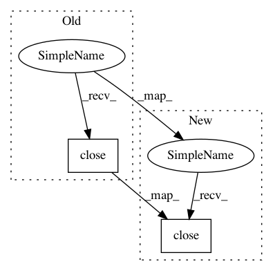

82163919065afede72161039c6ff65616fc91031,auto_ml/utils_data_cleaning.py,BasicDataCleaning,transform,#BasicDataCleaning#,179
Before Change
X.drop(cols_to_clean, axis=1, inplace=True)
pool = pathos.multiprocessing.ProcessPool()
try:
pool.restart()
except AssertionError as e:
pass
if df_to_clean.shape[0] > 100000 or os.environ.get("is_test_suite", 0) == "True":
results = list(map(lambda col: self.process_one_column(col_vals=df_to_clean[col], col_name=col), df_to_clean.columns))
else:
results = list(pool.map(lambda col: self.process_one_column(col_vals=df_to_clean[col], col_name=col), df_to_clean.columns))
pool.close()
try:
pool.join()
except AssertionError:
pass
After Change
if df_to_clean.shape[0] > 100000 or os.environ.get("is_test_suite", 0) == "True":
results = list(map(lambda col: self.process_one_column(col_vals=df_to_clean[col], col_name=col), df_to_clean.columns))
else:
pool = pathos.multiprocessing.ProcessPool()
try:
pool.restart()
except AssertionError as e:
pass
results = list(pool.map(lambda col: self.process_one_column(col_vals=df_to_clean[col], col_name=col), df_to_clean.columns))
pool.close()
try:
pool.join()
except AssertionError:
pass
In pattern: SUPERPATTERN
Frequency: 5
Non-data size: 2
Instances
Project Name: ClimbsRocks/auto_ml
Commit Name: 82163919065afede72161039c6ff65616fc91031
Time: 2017-12-15
Author: ClimbsBytes@gmail.com
File Name: auto_ml/utils_data_cleaning.py
Class Name: BasicDataCleaning
Method Name: transform
Project Name: OpenNMT/OpenNMT-py
Commit Name: 5226e0bcdcb42b2d2d8806134599b70a5249d8a1
Time: 2017-12-29
Author: myscarlet@sina.com
File Name: tools/test_rouge.py
Class Name:
Method Name: test_rouge
Project Name: ClimbsRocks/auto_ml
Commit Name: 343a835a26b6fbf1b7bd62965b74ed2d688319a5
Time: 2016-12-08
Author: ClimbsBytes@gmail.com
File Name: auto_ml/utils_ensemble.py
Class Name: Ensemble
Method Name: get_all_predictions
Project Name: NervanaSystems/nlp-architect
Commit Name: 3b27baf2719698ffe600ff3d33b10c04d2e39f33
Time: 2018-07-16
Author: jonathan.mamou@intel.com
File Name: solutions/set_expansion/prepare_data.py
Class Name:
Method Name: